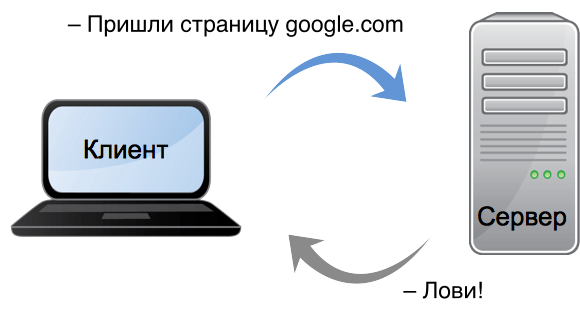
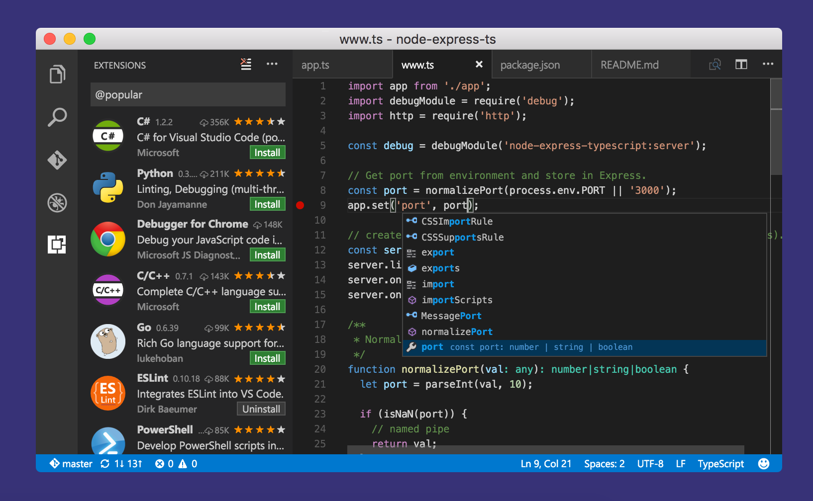
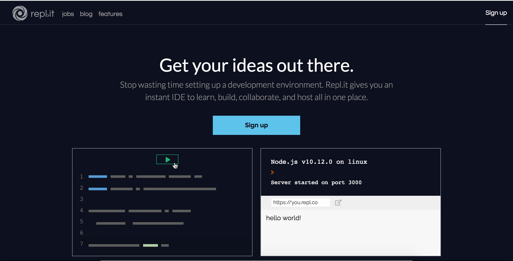
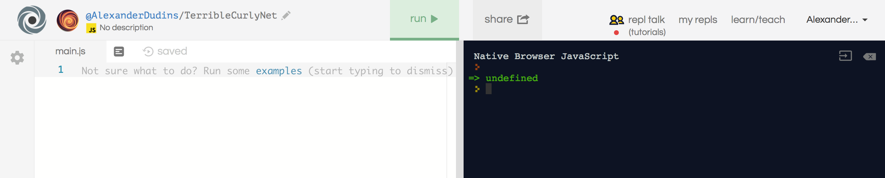
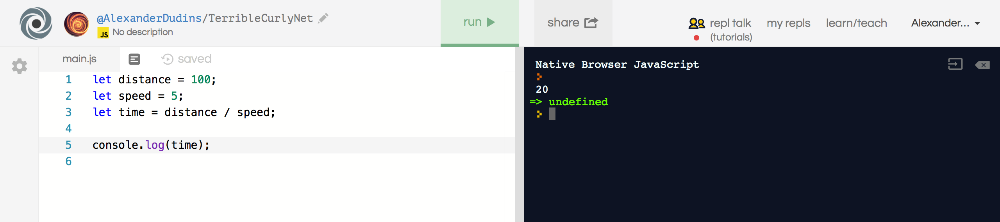

Ваши мысли
- Как вы думаете, как работает сайт?
- Видем ли мы всю работу сайта?
- Что происходит после того, когда мы вводим адрес сайта?

Камышев Игорь, Tech Lead
Камышев Игорь Tech Lead
Tech Lead Breadhead
Приветствуем вас на базовом курсе по основам программирования на примере популярного языка JavaScript.
На этом курсе мы с вами научимся:
Закрепить полученные знания вам поможет домашняя работа после каждой лекции. В конце курса вы напишете свою первую собственную игру!
Главный message нашего курса:
JavaScript — это увлекательно!
Клиент посылает запросы, а сервер присылает ответы.
HTTP ответы сервера содержат код ответа
Все сайты делятся на фронтэнд и бекэнд.
Фронтэнд — это фасад сайта, то, с чем взаимодействует посетитель: весь текст, картинки, кнопки и так далее. На нашем курсе по фронтэнду мы изучаем HTML, CSS и Javascript. Пройдя его можно стать полноценным junior-разработчиком в короткие сроки и получить 5 готовых проектов в резюме.
Бекэнд — это задний двор: устройство веб-сервера, которое отвечает за то, чтобы код работал правильно, письма отправлялись, статьи отображались и так далее. На нашем курсе по бекэнду мы изучаем PHP и базы данных.
ВАЖНО
Наш с вами курс - это основы программирования. Независимо от того профессионального пути который вы выберете, базовые знания и основы понадобятся как при работе с фронтэндом, так и с бекэндом.
На сервере и на клиенте работают программы/скрипты.
Программа — код и данные, предназначенных получения определённого результата. Программы обычно большие и сложные, их нужно устанавливать.
Помимо программ существуют скрипты. Скрипты обычно выполняют набор простых действий.
На картинке изображена программа редактора кода:
Мы все знакомы с MS Word, PowerPoint, Excel, Outlook Express, а также браузерами для работы в интернете - Opera, Google Chrome, Mozilla Firefox и др.
Ваши варианты?
Просто: Это то, как мы можем общаться с компьютером.
Сложнее: Это набор синтаксических правил, соблюдая которые получится написать программу.
Языки:
Программист — это специалист, который занимается разработкой компьютерных программ.
Javascript - скриптовый язык который выполняется интерпретатором, чаще всего браузером.
JavaScript делает web-странички «живыми». Программы на этом языке называются скриптами.
Для написания кода будем использовать Repl.it
Repl - это онлайн платформа где можно пробовать программировать. Как начать писать код?
Если вы видите
то все сделали правильно!
Можно писать свой первый код на Javascript!
В левой светлой половине мы будем писать код, а в правой будем получать результат.
Напишем пример и нажмем кнопку Run!
5 + 5;
10 * 10 + 15;
(100 - 8) / 2;
ВАЖНО
Код выполняет сверху вниз! Сначала выполняется первая строка, потом вторая и так далее до конца.
Решим пару задач
Задача 1: Расстояние между пунктами A и B равно 100км. Человек движется с постоянной скоростью 5км/ч из пункта A. За сколько времени наш герой достигнет пункта B?
Задача 2: Расстояние между пунктами A и C равно 140км. Человек движется с постоянной скоростью 5км/ч. За сколько времени наш герой достигнет пункта C?
Решение 1:
100 / 5;
Решение 2:
140 / 5;
Скорость одинаковая в обеих задачах. Дважды писать лень и поэтому мы можем воспользоваться переменной!
let)
Переменные используются для хранения информации.
В javascript для создания переменной используется слово let
let number;
Чтобы положить информацию в переменную
number = 10;
// number равно 10
Значение можно изменять
number = 20;
// а теперь number равно уже 20 !!!
Мы можем менять значение у переменной, но объявлять одну и ту же два раза мы не можем, будет ошибка:
let number;
number = 5;
let number; // ошибка!
Вместо:
let number;
number = 5;
Можно написать короче:
let number = 5;
Зависит от того, с какой информацией вы работаете.
Мы рассмотрим работу с некоторыми вариантами:
В JavaScript можно записывать как целые, так и дробные числа. Числа с плавающей точкой имеют целую и дробную часть.
let number1 = 10;
let number2 = 10.25;
let operator = 0;
let operator == 'Равенство';
let a = 10, b = 5;
console.log(a + b); // 15
console.log(a - b); // 5
console.log(a * b); // 50
console.log(a / b); // 2
// совмещаем:
let c = a + b;
console.log()?С помощью console.log() можно информацию на печать.
Например:
Записав в левой стороне код на javascript, в правой стороне мы видим консоль с результатом вычилений.
В JavaScript текстовые данные называются строками.
let string = "Это строка";
let anotherString = 'Другая строка';
let name = "Alex";
Кавычки можно использовать как двойные, так и одинарные.
console.log(name); // Alex
Мы можем подклеить значение переменной в конец строки с помощью оператора +:
let appleQuantity = 5;
let text = "Количество яблок: ";
console.log(text + appleQuantity);
или даже без переменной text:
let appleQuantity = 5;
console.log("Количество яблок: " + appleQuantity);
Расстояние между пунктами A и B равно 100км. Человек движется с постоянной скоростью 5км/ч из пункта A. За сколько времени наш герой достигнет пункта B?
let distance = 100;
let speed = 5;
let time = distance / speed;
console.log(time); // 20
С переменными наш код стал читаться лучше!
Давайте посмотрим ваше домашнее задание.
Спасибо за внимание! Время задавать вопросы
Игорь Камышев